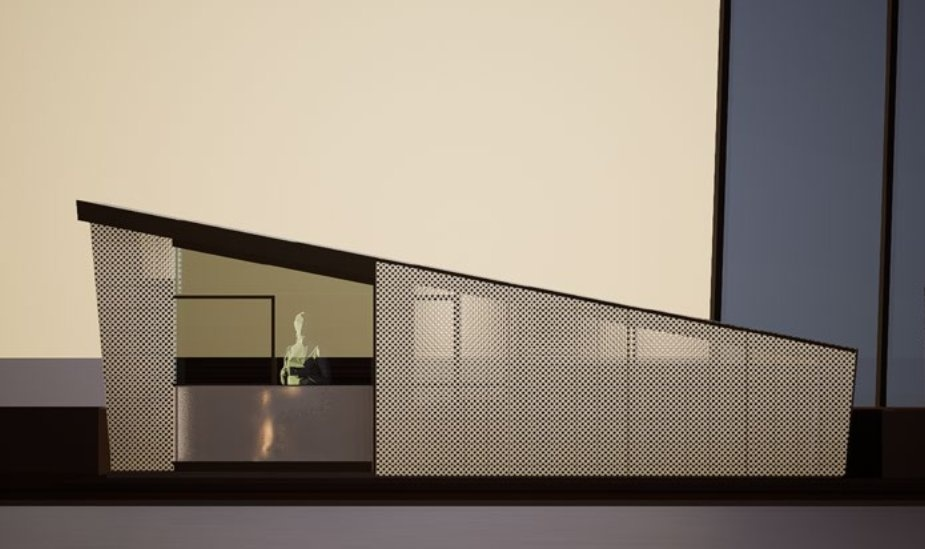
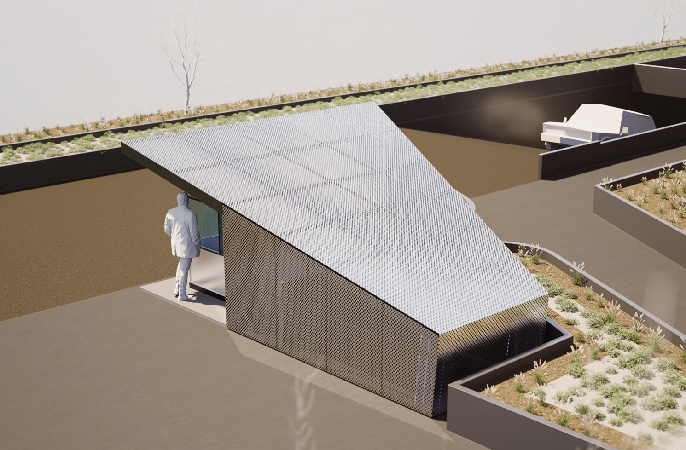
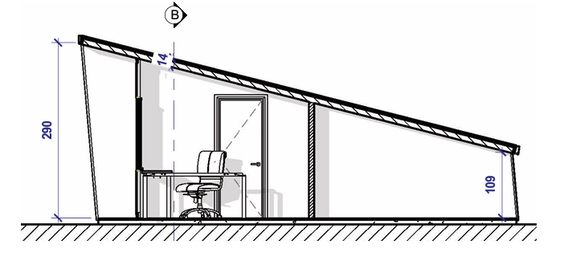

PRO · Small Scale
Sentry
A guard pavilion at Casablanca Finance City, the major financial district developed on the edge of Casablanca. The building performs within an extremely constrained footprint: access control, covered waiting, and a clear visual presence that marks the entry threshold to the complex.
The pavilion is positioned at the boundary between the public road and the controlled domain, its geometry derived from this threshold condition. The structure is detailed to respond to the urban and institutional scale of Casablanca Finance City, with a compact material palette and a folded roof profile that gives the building a precise, legible silhouette.
Render, Aerial View

Section B-B
